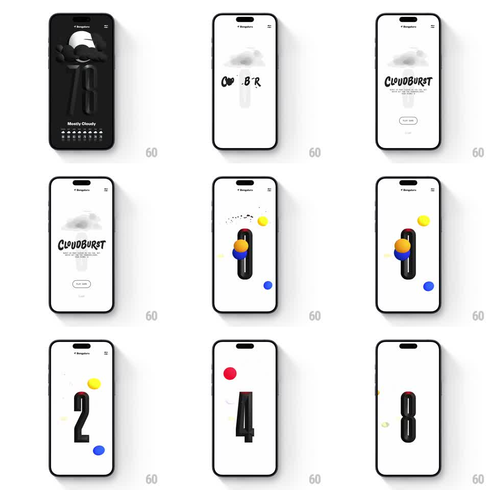

Media
Frame-by-frame

Rebuild this interaction 1:1: (Not Boring) Weather's CloudBurst easter egg - pulling or tapping into the hidden mode reveals the CLOUDBURST title, a PLAY GAME button, then a mini-game where colored balls pop against a black capsule and a giant score counter springs in with every hit.

Rebuild this interaction 1:1: (Not Boring) Weather's CloudBurst easter egg - pulling or tapping into the hidden mode reveals the CLOUDBURST title, a PLAY GAME button, then a mini-game where colored balls pop against a black capsule and a giant score counter springs in with every hit.
## Integration
Integration: stack-agnostic spec - springs given as stiffness/damping, timed motions as duration + curve; map every value to your framework and animation library of choice.
## Scene
Starts on the weather screen ("Mostly Cloudy", dark, 3D cloud character). The easter egg wipes to white: grey cloud at top, hand-drawn CLOUDBURST wordmark, one-line instructions, PLAY GAME button. Gameplay: a vertical black capsule track center-screen, colored balls (blue, orange, yellow, red) flying in, particle pops, and a giant centered score digit that swaps on every hit.
## Motion spec
Pattern: hidden-mode reveal with bouncy ball-pop gameplay and a springy score counter.
- Reveal: the cloud squashes and the wordmark letters bounce in one by one (spring ~300/14, 60ms stagger); PLAY GAME pill fades up after.
- On play, the intro elements scatter off-screen (fade + drift, 200ms) and the capsule drops in from the top (spring ~260/16).
- Balls launch on tap/timer with physics: they arc in, bounce off the capsule (squash on contact, 12% for 120ms), and pop into 8-12 confetti particles (radial burst, gravity, 500ms fade).
- Each pop bumps the score: the giant digit scales from 1.4 to 1 (spring ~320/15) with a color-matched particle ring behind it.
- Missed balls fall off the bottom and shrink-fade.
## Calibration
- Everything is springy and tactile - nothing moves linearly in the game.
- The score digit is huge and centered; it owns the screen on every pop.
## Reduced motion
Balls move on simple eased paths; pops show a small flash ring; the digit crossfades.
## Don't miss
- The wordmark's hand-drawn wobble - letters are slightly rotated and uneven.
- Confetti colors match the ball that popped.